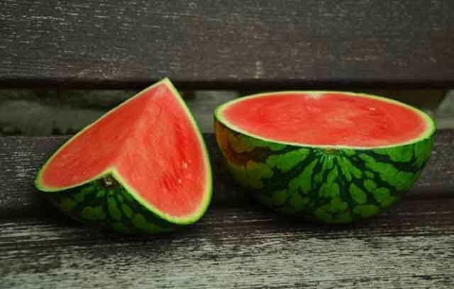
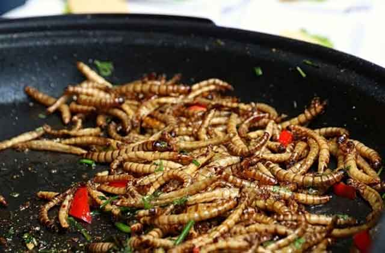

고슴도치는 무엇을 먹으며 살까?
수많은 동물이 야생동물이었듯 고슴도치 역시 야생에서 살았습니다. 그래서 야생에서 먹을 수 있었던 곤충, 과일이 고슴도치의 주식이었죠. 하지만 고슴도치를 가정에서 키우게 되면 고슴도치가 먹을 수 있는 야생 곤충을 구하기란 쉽지 않습니다. 매번 외부에서 곤충을 구해올 수도 없고, 살아있는 곤충을 사 오기 역시 쉽지 않습니다. 혹여 외부에서 구한다고 하더라도 외부 생태계가 상당히 파괴된 지금 신뢰할 수 있는 먹이인지도 잘 모르지요. 그렇다면 고슴도치는 무엇을 먹으며 살까요? 어떤 먹이가 있는지 알아볼게요!
[사료]
강아지, 고양이와 마찬가지로 고슴도치도 사료가 있습니다. 사료는 참 편리하죠. 다만, 강아지, 고양이 사료와는 달리 고슴도치 사료는 비교적 비싼 편입니다. 또한, 각각의 고슴도치마다 기호성이 모두 달라 사료가 잘 맞지 않는 때도 있습니다. 그래서 최근에는 강아지, 고양이 사료를 먹이기도 합니다. 사실상 성분의 차이가 없거든요! 다만, 사료는 영양소가 풍부하지 못하기 때문에 식이의 편이성 외에는 그다지 장점이 없다는 것을 참고하셔야 합니다.
[곤충]
고슴도치를 가정에서 키우게 되면 곤충을 완전히 먹지 않는 것은 아닙니다. 고슴도치에게 곤충을 급여할 수 있는 데요. 대표적으로 급여하는 곤충으로는 '밀 웜' 이 있습니다. 고슴도치가 가장 좋아하는 곤충 중 하나죠. 단백질이 풍부하고 비교적 주기가 쉽다는 장점을 갖고 있습니다. 다만, 기생충 감염의 우려가 있어 정기적으로 구충을 해주는 것이 좋습니다.
'귀뚜라미' 역시 고슴도치가 좋아하는 곤충입니다. 주식으로 주기보다는 간식으로 활용하는 것이 좋습니다.
[과일]
멜론, 수박, 사과, 바나나, 베리 등이 있습니다. 많은 과일류를 선호하는 데요. 주의해야 할 과일 및 음식이 있다면 오렌지, 파인애플, 토마토가 있어요. 먹을 수 없는 음식은 아니지만, 소량 급여하는 게 중요하답니다. 복숭아나 망고 등은 먹을 수 없습니다. 그 외에도 먹을 수 없는 음식으로는 대게 사람이 먹는 음식으로 나물이나 고사리, 토란, 고구마, 감자 등이 있습니다. 고슴도치는 작은 동물입니다. 먹지 말아야 할 음식을 먹었다가 생명의 위협이 될 수도 있습니다.
사람과 마찬가지로 고슴도치도 균형 있는 영양 식단이 중요합니다. 좋아하는 음식이라고 무작정 주기보다는 균형 있는 식단으로 급여해 고슴도치의 식습관을 맞춰주는 것이 좋습니다. 고슴도치의 수명은 6~8년으로 그리 짧지 않습니다. 오래 사는 것도 중요하지만, 건강하게 오래 사는 것이 맞겠죠? 고슴도치의 건강과 장수를 위해서 알맞은 식단, 균형 있는 식단을 구성해 보세요! 반려동물과 반려인이 행복해지는 결과로 이끌어 줄 거에요.
[출처] 고슴도치는 무엇을 먹으며 살까? ｜ 작성자 땡구와뽀냥이